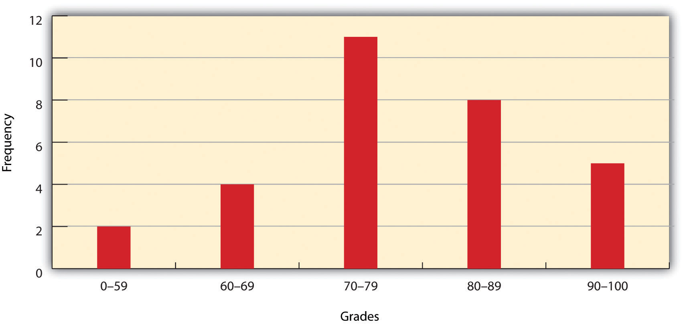
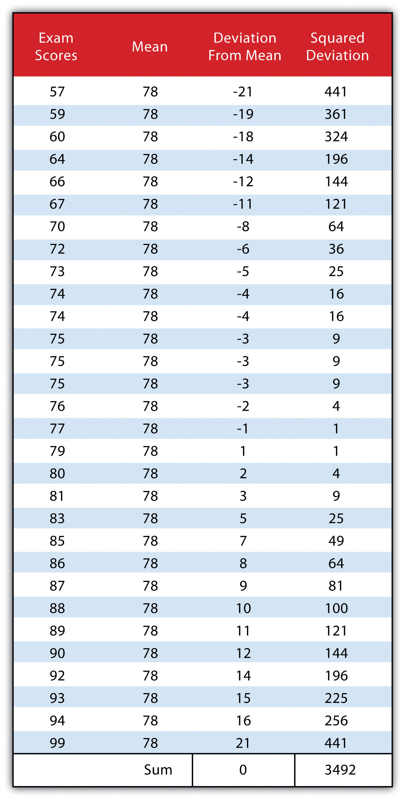
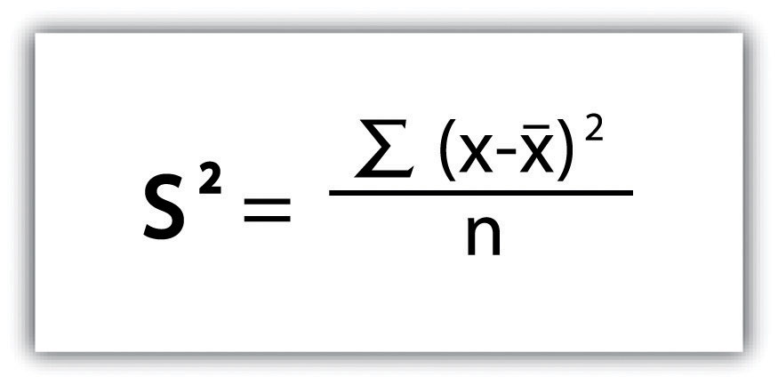
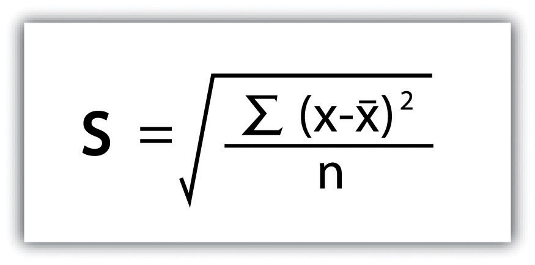
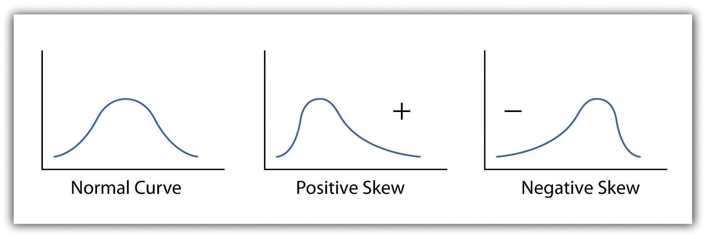
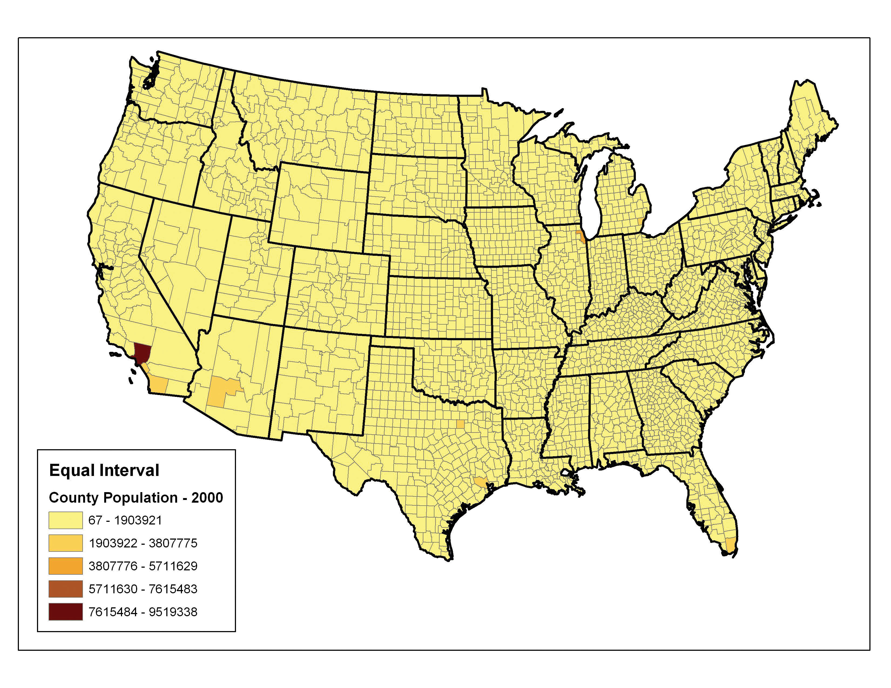
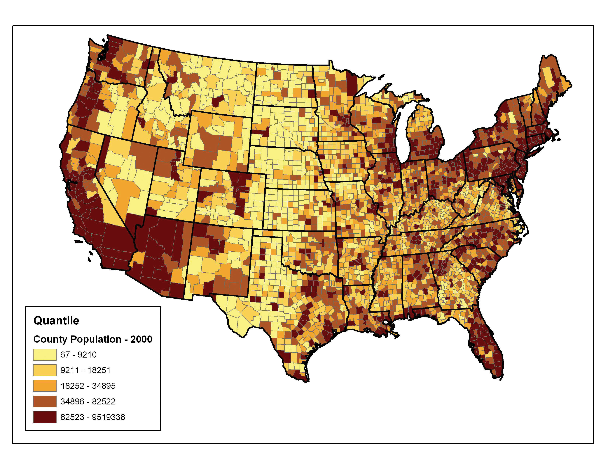
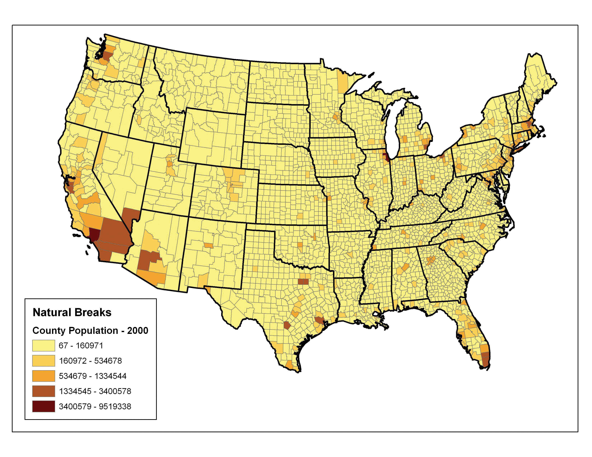
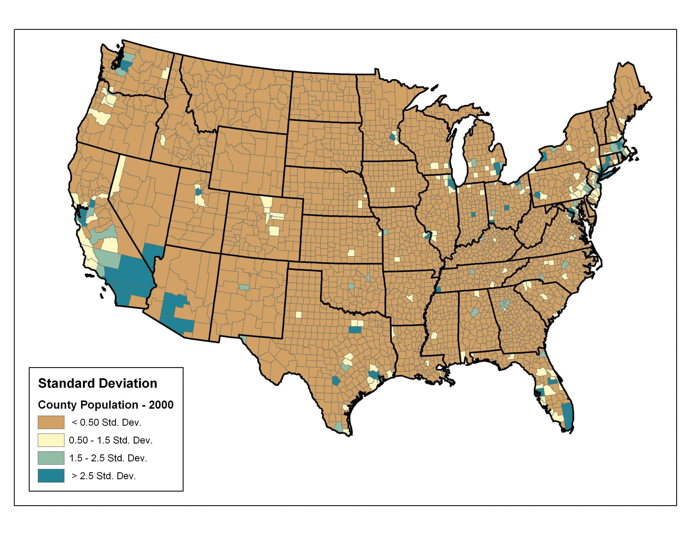

In previous chapters, we learned how geographic information system (GIS) software packages use databases to store extensive attribute information for geospatial features within a map. The true usefulness of this information, however, is not realized until similarly powerful analytical tools are employed to access, process, and simplify the data. To accomplish this, GIS typically provides extensive tools for searching, querying, describing, summarizing, and classifying datasets. With these data exploration tools, even the most expansive datasets can be mined to provide users the ability to make meaningful insights into and statements about that information.
No discussion of geospatial analysis would be complete without a brief overview of basic statistical concepts. The basic statistics outlined here represent a starting point for any attempt to describe, summarize, and analyze geospatial datasets. An example of a common geospatial statistical endeavor is the analysis of point data obtained by a series of rainfall gauges patterned throughout a particular region. Given these rain gauges, one could determine the typical amount and variability of rainfall at each station, as well as typical rainfall throughout the region as a whole. In addition, you could interpolate the amount of rainfall that falls between each station or the location where the most (or least) rainfall occurs. Furthermore, you could predict the expected amount of rainfall into the future at each station, between each station, or within the region as a whole.
The increase of computational power over the past few decades has given rise to vast datasets that cannot be summarized easily. Descriptive statisticsPresenting data in the form of tables and charts or summarizing data through the use of simple mathematical equations. provide simple numeric descriptions of these large datasets. Descriptive statistics tend to be univariate analyses, meaning they examine one variable at a time. There are three families of descriptive statistics that we will discuss here: measures of distribution, measures of central tendency, and measures of dispersion. However, before we delve too deeply into various statistical techniques, we must first define a few terms.
The measure of distributionA statistic that uses a set of numbers and their frequency of occurrence collected from measurements taken over a statistical population. of a variable is merely a summary of the frequency of values over the range of the dataset (hence, this is often called a frequency distribution). Typically, the values for the given variable will be grouped into a predetermined series of classes (also called intervals, bins, or categories), and the number of data values that fall into each class will be summarized. A graph showing the number of data values within each class range is called a histogramA bar graph that represents the frequency of values of a quantity by vertical rectangles of varying heights and widths.. For example, the percentage grades received by a class on an exam may result in the following array (n = 30):
Array of Exam Scores: {87, 76, 89, 90, 64, 67, 59, 79, 88, 74, 72, 99, 81, 77, 75, 86, 94, 66, 75, 74, 83, 100, 92, 75, 73, 70, 60, 80, 85, 57}When placing this array into a frequency distribution, the following general guidelines should be observed. First, between five and fifteen different classes should be employed, although the exact number of classes depends on the number of observations. Second, each observation goes into one and only one class. Third, when possible, use classes that cover an equal range of values (Freund and Perles 2006).Freund, J., and B. Perles. 2006. Modern Elementary Statistics. Englewood Cliffs, NJ: Prentice Hall. With these guidelines in mind, the exam score array shown earlier can be visualized with the following histogram (Figure 6.1 "Histogram Showing the Frequency Distribution of Exam Scores").
Figure 6.1 Histogram Showing the Frequency Distribution of Exam Scores
As you can see from the histogram, certain descriptive observations can be readily made. Most students received a C on the exam (70–79). Two students failed the exam (50–59). Five students received an A (90–99). Note that this histogram does violate the third basic rule that each class cover an equal range because an F grade ranges from 0–59, whereas the other grades have ranges of equal size. Regardless, in this case we are most concerned with describing the distribution of grades received during the exam. Therefore, it makes perfect sense to create class ranges that best suit our individual needs.
We can further explore the exam score array by applying measures of central tendencyA statistic that measures the “middle” of a dataset.. There are three primary measures of central tendency: the mean, mode, and median. The meanThe mathematical average of a set of numbers., more commonly referred to as the average, is the most often used measure of central tendency. To calculate the mean, simply add all the values in the array and divide that sum by the number of observations. To return to the exam score example from earlier, the sum of that array is 2,340, and there are 30 observations (n = 30). So, the mean is 2,340 / 30 = 78.
The modeAn average found by determining the most frequent value in a group of values. is the measure of central tendency that represents the most frequently occurring value in the array. In the case of the exam scores, the mode of the array is 75 as this was received by the most number of students (three, in total). Finally, the medianThe value lying at the midpoint of a frequency distribution of observed values. is the observation that, when the array is ordered from lowest to highest, falls exactly in the center of the sorted array. More specifically, the median is the value in the middle of the sorted array when there are an odd number of observations. Alternatively, when there is an even number of observations, the median is calculated by finding the mean of the two central values. If the array of exam scores were reordered into a sorted array, the scores would be listed thusly:
Sorted Array of Exam Scores: {57, 59, 60, 64, 66, 67, 70, 72, 73, 74, 74, 75, 75, 75, 76, 77, 79, 80, 81, 83, 85, 86, 87, 88, 89, 90, 92, 93, 94, 99}Since n = 30 in this example, there are an even number of observations. Therefore, the mean of the two central values (15th = 76 and 16th = 77) is used to calculate the median as described earlier, resulting in (76 + 77) / 2 = 76.5. Taken together, the mean, mode, and median represent the most basic ways to examine trends in a dataset.
The third type of descriptive statistics is measures of dispersionThe variability, or spread, in a variable or probability distribution. (also referred to as measures of variability). These measures describe the spread of data around the mean. The simplest measure of dispersion is the rangeThe difference between the highest and lowest values in a dataset.. The range equals the largest value minus in the dataset the smallest. In our case, the range is 99 − 57 = 42.
The interquartile rangeThe difference between the first quartile (25th percentile) and the third quartile (75th percentile) of a set of ordered data. represents a slightly more sophisticated measure of dispersion. This method divides the data into quartiles. To accomplish this, the median is used to divide the sorted array into two halves. These halves are again divided into halves by their own median. The first quartile (Q1) is the median of the lower half of the sorted array and is also referred to as the lower quartile. Q2 represents the median. Q3 is the median of the upper half of the sorted array and is referred to as the upper quartile. The difference between the upper and lower quartile is the interquartile range. In the exam score example, Q1 = 72.25 and Q3 = 86.75. Therefore, the interquartile range for this dataset is 86.75 − 72.25 = 14.50.
A third measure of dispersion is the varianceA measure of the difference between a set of data points and their mean values. (s2). To calculate the variance, subtract the raw value of each exam score from the mean of the exam scores. As you may guess, some of the differences will be positive, and some will be negative, resulting in the sum of differences equaling zero. As we are more interested in the magnitude of differences (or deviations) from the mean, one method to overcome this “zeroing” property is to square each deviation, thus removing the negative values from the output (Figure 6.2). This results in the following:
Figure 6.2
We then divide the sum of squares by either n − 1 (in the case of working with a sample) or n (in the case of working with a population). As the exam scores given here represent the entire population of the class, we will employ Figure 6.3 "Variance", which results in a variance of s2 = 116.4. If we wanted to use these exam scores to extrapolate information about the larger student body, we would be working with a sample of the population. In that case, we would divide the sum of squares by n − 1.
Figure 6.3 Variance
Standard deviationA measure of the dispersion of a set of data from its mean., the final measure of dispersion discussed here, is the most commonly used measure of dispersion. To compensate for the squaring of each difference from the mean performed during the variance calculation, standard deviation takes the square root of the variance. As determined from Figure 6.4 "Standard Deviation", our exam score example results in a standard deviation of s = SQRT(116.4) = 10.8.
Figure 6.4 Standard Deviation
Calculating the standard deviation allows us to make some notable inferences about the dispersion of our dataset. A small standard deviation suggests the values in the dataset are clustered around the mean, while a large standard deviation suggests the values are scattered widely around the mean. Additional inferences may be made about the standard deviation if the dataset conforms to a normal distribution. A normal distribution implies that the data, when placed into a frequency distribution (histogram), looks symmetrical or “bell-shaped.” When not “normal,” the frequency distribution of dataset is said to be positively or negatively “skewed” (Figure 6.5 "Histograms of Normally Curved, Positively Skewed, and Negatively Skewed Datasets"). Skewed data are those that maintain values that are not symmetrical around the mean. Regardless, normally distributed data maintains the property of having approximately 68 percent of the data values fall within ± 1 standard deviation of the mean, and 95 percent of the data value fall within ± 2 standard deviations of the mean. In our example, the mean is 78, and the standard deviation is 10.8. It can therefore be stated that 68 percent of the scores fall between 67.2 and 88.8 (i.e., 78 ± 10.8), while 95 percent of the scores fall between 56.4 and 99.6 (i.e., 78 ± [10.8 * 2]). For datasets that do not conform to the normal curve, it can be assumed that 75 percent of the data values fall within ± 2 standard deviations of the mean.
Figure 6.5 Histograms of Normally Curved, Positively Skewed, and Negatively Skewed Datasets
Access to robust search and query tools is essential to examine the general trends of a dataset. QueriesSearches or inquiries. are essentially questions posed to a database. The selective display and retrieval of information based on these queries are essential components of any geographic information system (GIS). There are three basic methods for searching and querying attribute data: (1) selection, (2) query by attribute, and (3) query by geography.
SelectionA defined subset of the larger set of data points or locales. represents the easiest way to search and query spatial data in a GIS. Selecting features highlight those attributes of interest, both on-screen and in the attribute table, for subsequent display or analysis. To accomplish this, one selects points, lines, and polygons simply by using the cursor to “point-and-click” the feature of interest or by using the cursor to drag a box around those features. Alternatively, one can select features by using a graphic object, such as a circle, line, or polygon, to highlight all of those features that fall within the object. Advanced options for selecting subsets of data from the larger dataset include creating a new selection, selecting from the currently selected features, adding to the current selection, and removing from the current selection.
Map features and their associated data can be retrieved via the query of attribute information within the data tables. For example, search and query tools allow a user to show all the census tracts that have a population density of 500 or greater, to show all counties that are less than or equal to 100 square kilometers, or to show all convenience stores within 1 mile of an interstate highway.
Specifically, SQL (Structured Query Language)A programming language designed to manage data in a relational database. is a commonly used computer language developed to query attribute data within a relational database management system. Created by IBM in the 1970s, SQL allows for the retrieval of a subset of attribute information based on specific, user-defined criteria via the implementation of particular language elements. More recently, the use of SQL has been extended for use in a GIS (Shekhar and Chawla 2003).Shekhar, S., and S. Chawla. 2003. Spatial Databases: A Tour. Upper Saddle River, NJ: Prentice Hall. One important note related to the use of SQL is that the exact expression used to query a dataset depends on the GIS file format being examined. For example, ANSI SQL is a particular version used to query ArcSDE geodatabases, while Jet SQL is used to access personal geodatabases. Similarly, shapefiles, coverages, and dBASE tables use a restricted version of SQL that doesn’t support all the features of ANSI SQL or Jet SQL.
As discussed in Chapter 5 "Geospatial Data Management", Section 5.2 "Geospatial Database Management", all attribute tables in a relational database management system (RDBMS) used for an SQL query must contain primary and/or foreign keys for proper use. In addition to these keys, SQL implements clauses to structure database queries. A clauseA grammatical unit in SQL. is a language element that includes the SELECT, FROM, WHERE, ORDER BY, and HAVING query statements.
While the SELECT and FROM clauses are both mandatory statements in an SQL query, the WHERE is an optional clause used to limit the output set. The ORDER BY and HAVING are optional clauses used to present the information in an interpretable manner.
Figure 6.6 Personal Addresses in “ExampleTable” Attribute Table

The following is a series of SQL expressions and results when applied to Figure 6.6 "Personal Addresses in “ExampleTable” Attribute Table". The title of the attribute table is “ExampleTable.” Note that the asterisk (*) denotes a special case of SELECT whereby all columns for a given record are selected:
SELECT * FROM ExampleTable WHERE City = “Upland”This statement returns the following:

Consider the following statement:
SELECT LastName FROM ExampleTable WHERE State = “CA” ORDER BY FirstNameThis statement results in the following table sorted in ascending order by the FirstName column (not included in the output table as directed by the SELECT clause):

In addition to clauses, SQL allows for the inclusion of specific operators to further delimit the result of query. These operators can be relational, arithmetic, or Boolean and will typically appear inside of conditional statements in the WHERE clause. A relational operatorA construct that tests a relation between two entities. employs the statements equal to (=), less than (<), less than or equal to (<=), greater than (>), or greater than or equal to (>=). Arithmetic operatorsA construct that performs an arithmetic function. are those mathematical functions that include addition (+), subtraction (−), multiplication (*), and division (/). Boolean operatorsA construct that performs a logical comparison. (also called Boolean connectors) include the statements AND, OR, XOR, and NOT. The AND connector is used to select records from the attribute table that satisfies both expressions. The OR connector selects records that satisfy either one or both expressions. The XOR connector selects records that satisfy one and only one of the expressions (the functional opposite of the AND connector). Lastly, the NOT connector is used to negate (or unselect) an expression that would otherwise be true. Put into the language of probability, the AND connector is used to represent an intersection, OR represents a union, and NOT represents a complement. Figure 6.7 "Venn Diagram of SQL Operators" illustrates the logic of these connectors, where circles A and B represent two sets of intersecting data. Keep in mind that SQL is a very exacting language and minor inconsistencies in the statement, such as additional spaces, can result in a failed query.
Figure 6.7 Venn Diagram of SQL Operators

Used together, these operators combine to provide the GIS user with powerful and flexible search and query options. With this in mind, can you determine the output set of the following SQL query as it is applied to Figure 6.1 "Histogram Showing the Frequency Distribution of Exam Scores"?
SELECT LastName, FirstName, StreetNumber FROM ExampleTable WHERE StreetNumber >= 10000 AND StreetNumber < 100 ORDER BY LastNameThe following are the results:

Query by geography, also known as a “spatial query,” allows one to highlight particular features by examining their position relative to other features. For example, a GIS provides robust tools that allow for the determination of the number of schools within 10 miles of a home. Several spatial query options are available, as outlined here. Throughout this discussion, the “target layer” refers to the feature dataset whose attributes are selected, while the “source layer” refers to the feature dataset on which the spatial query is applied. For example, if we were to use a state boundary polygon feature dataset to select highways from a line feature dataset (e.g., select all the highways that run through the state of Arkansas), the state layer is the source, while the highway layer is the target.
Figure 6.8

The highlighted blue and yellow features are selected because they intersect the red features.
Figure 6.9

The highlighted blue and yellow features are selected because they are within the selected distance of the red features; tan areas represent buffers around the various features.
Figure 6.10

The highlighted blue and yellow features are selected because they completely contain the red features.
Figure 6.11

The highlighted blue and yellow features are selected because they are completely within the red features.
Figure 6.12

The highlighted blue and yellow features are selected because they have their centers in the red features.
Figure 6.13

The highlighted blue and yellow features are selected because they share a line segment with the red features.
Figure 6.14

The highlighted blue and yellow features are selected because they touch the boundary of the red features.
Figure 6.15

The highlighted blue and yellow features are selected because they are identical to the red features.
Figure 6.16

The highlighted blue and yellow features are selected because they are crossed by the outline of the red features.
Figure 6.17

The highlighted blue and yellow features are selected because they contain the red features.
Figure 6.18

The highlighted blue and yellow features are selected because they are contained by the red features.
The process of data classification combines raw data into predefined classes, or bins. These classes may be represented in a map by some unique symbols or, in the case of choropleth maps, by a unique color or hue (for more on color and hue, see Chapter 8 "Geospatial Analysis II: Raster Data", Section 8.1 "Basic Geoprocessing with Rasters"). Choropleth mapsA mapping technique that uses graded differences in shading, color, or symbolology to define average values of some property or quantity. are thematic maps shaded with graduated colors to represent some statistical variable of interest. Although seemingly straightforward, there are several different classification methodologies available to a cartographer. These methodologies break the attribute values down along various interval patterns. Monmonier (1991)Monmonier, M. 1991. How to Lie with Maps. Chicago: University of Chicago Press. noted that different classification methodologies can have a major impact on the interpretability of a given map as the visual pattern presented is easily distorted by manipulating the specific interval breaks of the classification. In addition to the methodology employed, the number of classes chosen to represent the feature of interest will also significantly affect the ability of the viewer to interpret the mapped information. Including too many classes can make a map look overly complex and confusing. Too few classes can oversimplify the map and hide important data trends. Most effective classification attempts utilize approximately four to six distinct classes.
While problems potentially exist with any classification technique, a well-constructed choropleth increases the interpretability of any given map. The following discussion outlines the classification methods commonly available in geographic information system (GIS) software packages. In these examples, we will use the US Census Bureau’s population statistic for US counties in 1997. These data are freely available at the US Census website (http://www.census.gov).
The equal intervalA choropleth mapping technique that sets the value ranges in each category to an equal size. (or equal step) classification method divides the range of attribute values into equally sized classes. The number of classes is determined by the user. The equal interval classification method is best used for continuous datasets such as precipitation or temperature. In the case of the 1997 Census Bureau data, county population values across the United States range from 40 (Yellowstone National Park County, MO) to 9,184,770 (Los Angeles County, CA) for a total range of 9,184,770 − 40 = 9,184,730. If we decide to classify this data into 5 equal interval classes, the range of each class would cover a population spread of 9,184,730 / 5 = 1,836,946 (Figure 6.19 "Equal Interval Classification for 1997 US County Population Data"). The advantage of the equal interval classification method is that it creates a legend that is easy to interpret and present to a nontechnical audience. The primary disadvantage is that certain datasets will end up with most of the data values falling into only one or two classes, while few to no values will occupy the other classes. As you can see in Figure 6.19 "Equal Interval Classification for 1997 US County Population Data", almost all the counties are assigned to the first (yellow) bin.
Figure 6.19 Equal Interval Classification for 1997 US County Population Data
The quantileA choropleth mapping technique that classifies data into a predefined number of categories with an equal number of units in each category. classification method places equal numbers of observations into each class. This method is best for data that is evenly distributed across its range. Figure 6.20 "Quantiles" shows the quantile classification method with five total classes. As there are 3,140 counties in the United States, each class in the quantile classification methodology will contain 3,140 / 5 = 628 different counties. The advantage to this method is that it often excels at emphasizing the relative position of the data values (i.e., which counties contain the top 20 percent of the US population). The primary disadvantage of the quantile classification methodology is that features placed within the same class can have wildly differing values, particularly if the data are not evenly distributed across its range. In addition, the opposite can also happen whereby values with small range differences can be placed into different classes, suggesting a wider difference in the dataset than actually exists.
Figure 6.20 Quantiles
The natural breaks (or Jenks)A choropleth mapping technique that places class breaks in gaps between clusters of values. classification method utilizes an algorithm to group values in classes that are separated by distinct break points. This method is best used with data that is unevenly distributed but not skewed toward either end of the distribution. Figure 6.21 "Natural Breaks" shows the natural breaks classification for the 1997 US county population density data. One potential disadvantage is that this method can create classes that contain widely varying number ranges. Accordingly, class 1 is characterized by a range of just over 150,000, while class 5 is characterized by a range of over 6,000,000. In cases like this, it is often useful to either “tweak” the classes following the classification effort or to change the labels to some ordinal scale such as “small, medium, or large.” The latter example, in particular, can result in a map that is more comprehensible to the viewer. A second disadvantage is the fact that it can be difficult to compare two or more maps created with the natural breaks classification method because the class ranges are so very specific to each dataset. In these cases, datasets that may not be overly disparate may appear so in the output graphic.
Figure 6.21 Natural Breaks
Finally, the standard deviation classification method forms each class by adding and subtracting the standard deviation from the mean of the dataset. The method is best suited to be used with data that conforms to a normal distribution. In the county population example, the mean is 85,108, and the standard deviation is 277,080. Therefore, as can be seen in the legend of Figure 6.22 "Standard Deviation", the central class contains values within a 0.5 standard deviation of the mean, while the upper and lower classes contain values that are 0.5 or more standard deviations above or below the mean, respectively.
Figure 6.22 Standard Deviation
In conclusion, there are several viable data classification methodologies that can be applied to choropleth maps. Although other methods are available (e.g., equal area, optimal), those outlined here represent the most commonly used and widely available. Each of these methods presents the data in a different fashion and highlights different aspects of the trends in the dataset. Indeed, the classification methodology, as well as the number of classes utilized, can result in very widely varying interpretations of the dataset. It is incumbent upon you, the cartographer, to select the method that best suits the needs of the study and presents the data in as meaningful and transparent a way as possible.